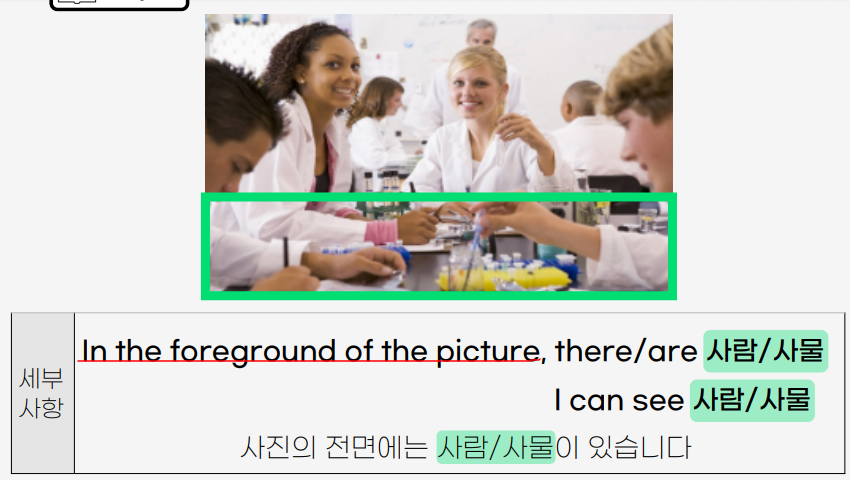
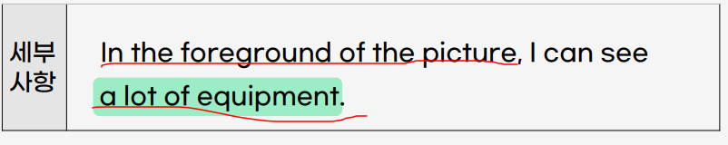
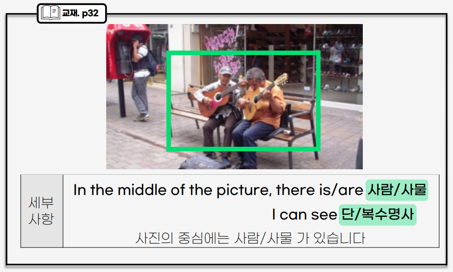
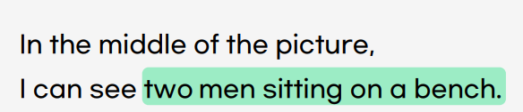
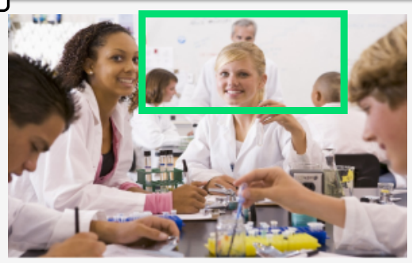

0. Intro
- 사진묘사
- Q3-4, 답변 준비 시간 각 45초, 답변 시간 각 30초
- 참고영상
1. 파트2 만점전략
(1) 실점 원인 6가지
준비시간 활용을 잘 못하는 경우
아주 기본적인 단어를 모르는 경우
외운 템플릿에서는 빠른속도, 내가 영작해야 하는 부분에서는 느려짐
세부 사항에 집착을 하다가 사진의 전반적인 것들을 설명 못함
기본적인 문법실수가 너무 심하게 반복 (ex, 한 문장에 동사가 2개, equipment 같은 불가산 명사에 (a)를 붙임)
사진에 대한 묘사 보다 내 의견 위주로 말하는 경우
(2) 만접 비법 3가지
지엽적, 한가지 대상만 오래 설명하지말고, “공통문장”을 써서 전반적인 묘사를 하자.
모르는 단어는 더큰 범위의 단어로 표현
ex1) a hammer \(\to\) a tool
ex2) a pitchfork(쇠스랑) \(\to\) a garden tool
ex3) a yellow cardigan \(\to\) yellow clothes
ex4) a beaker \(\to\) equipment
summary
준비시간: 필기비추, 최대 중요 포인트 몇가지 잡고 순서만 정하자.
답변시간 : 지엽적, 한가지 대상만 오래설명하지말고 공통문장을 사용해서 “핵심적, 전반적”인 묘사를 사용하자.
2. 파트 2 템플릿
(1) 서론
This is a picture taken at/in 장소
This is a picture taken indoors/outdoors
(2) 전체요약
- 때에 따라 생략가능
The first thing I can see from this picture is 대표적인 사람/사물
(3) 세부사항
(3)-1. 정면


(3)-2. 중심


(3)-3. 왼쪽/오른쪽
- On the right/left side of the picture, there is/are
사람/사물I can see단/복수명사
On the left side of the picture, there is a man with a beard.(턱수염이 있는 남자)
On the right side of the picture, there is a man sitting on a chair
(3)-4. 배경

- In the background of the picture, I can see three people.
(4) 마무리
- 1인 유형을 제외하고는 생략하는 것을 추천
- Overall, It seems/looks like
주어 + 동사\(\to\) Overall, It seems like the woman is busy.
(5) 주의해야할 문법
(5)-1. 분사 vs 현재진행형
- 분사 : N + ing
I can see a man working hard (열심히 일하고 있는 남자를 볼 수 있다.)
- 현재진행형 : be + ing
He is working hard. (그는 열심히 일하고 있는 중이다.)
- a lot of는 셀 수 있는/없는 명사 모두 수식 가능
1인묘사 유형
Q1

This is a picture taken indoors. (서론)
The first thing I can see from this picture is a woman, (전체요약)
She is working and using a drill. Also, she is holding a piece of wood and looking at it.(인물묘사)
In front of her, there is a table. On the right side of the picture, I can see shelves. (기타사물배경)
Overall, it seems like the woman is busy.
Q2

This is a picture taken at cafe.
The first thing I can see from this picture is a woman,
she is sitting at a table. she is wearning a blue shirt(셜트), and she has long hair.
she is holing a smartphone and looking at the screen.
In front of her, there is a table. On the table, I can see a pick cup.
Overall, it seems like the woman is busy.
2인 묘사 유형
Q1

This is a picture taken outdoors.
The first thing I can see from this picture is two people.
The man on the left is smiling and is wearing a black T-shirt.
They are wearing helmets, sunglasses, and sportswear. Also, they are riding bicycles.
In the background of the picture, I can see green grass.
Q2
This is a picture taken outdoors.
The first thing I can see from this picture is two people.
They are taking a picture. Also, they are wearing sunglasses and smiling.
The woman in the picture is wearing blue cloths. she is holding a smartphone and taking a picture.
The man is holing a camera and waving his hand.
다수의 사람 유형
Q1
This is a picture taken outdoors.
The first thing I can see from this picture is some people.
On the rigth side of the picture, I can see two people. They are taking a walk.
One of them is a woman. She is walking a dog.
The other is a a girl. She has a ponytail and she is wearing a blue shirt.
In the background of the picture, I can see a house (and on old lady (pushing a stroller)유모차를 밀다.) \(\to\) 생략가능
Q2

This is a picture taken outdoors.
The first thing I can see from this picture is some people
On the left side of the picture, I can see a man sitting on the ground and taking a picture.
On the right side of the picture, I can see amen walking on the street.
In the back ground of the picture, I can see buildings, parasols, and more people walking around(서성거리다.).
set2-Q1
This is a picture taken outdoors.
(전체요약 생략)
In the middle of the picture, I can see a lot of people crossing the street.
Some of them are carrying bags.(Most of them are wearing casual clothes.)
On the right side of the picture, there is a car. Next to it, there is a sidewalk.
In the backgroud of the picture, I can see two big buildings,(street lights, signboards(가로등), and traffic lights(산호등))